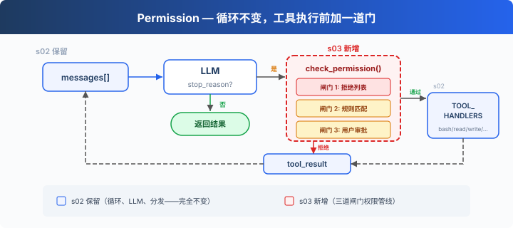
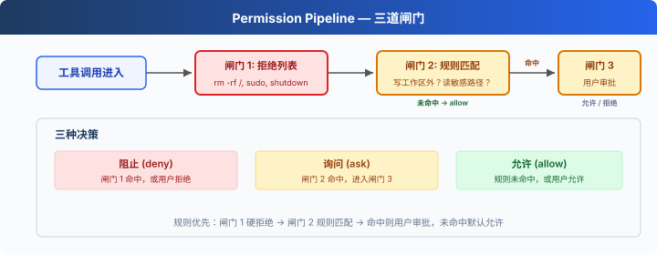

s03: Permission — 执行前做权限判断
"工具执行前先做权限判断" — 权限管线决定哪些操作需要审批。 Harness 层: 权限 — 在工具执行前加一道门。
On this page
s01 → s02 → s03 → s04 → s05 → ... → s20
"工具执行前先做权限判断" — 权限管线决定哪些操作需要审批。
Harness 层: 权限 — 在工具执行前加一道门。
问题
s02 的 Agent 有 5 个工具。file tools 受 safe_path 保护，但 bash 不受限制。让它"清理一下项目"，可能执行 rm -rf /。
安全不能靠信任模型，要靠代码——在工具执行之前做判断。
解决方案

s02 的循环完全保留。唯一的变动在工具执行前插入 check_permission()——每个工具调用经过三道闸门，顺序固定：硬拒绝优先，软询问次之，都没命中就放行。
三道闸门对应三种决策：
| 闸门 | 作用 | 命中后 |
|---|---|---|
| 1. 拒绝列表 | 永远禁止的操作（rm -rf /、sudo） |
直接拒绝，不执行 |
| 2. 规则匹配 | 取决于上下文的操作（写工作区外、rm 文件） |
交给闸门 3 |
| 3. 用户审批 | 闸门 2 命中后，暂停等用户确认 | 用户决定允许或拒绝 |
三道都没命中 → 直接执行。大部分日常操作走这条路。
工作原理

闸门 1：一张硬拒绝表，先查，命中就返回阻止信息。（教学示意：简单字符串匹配不是可靠安全机制，命令变体和 shell 展开可能绕过。CC 的做法见附录。）
DENY_LIST = [
"rm -rf /", "sudo", "shutdown", "reboot",
"mkfs", "dd if=", "> /dev/sda",
]
def check_deny_list(command: str) -> str | None:
for pattern in DENY_LIST:
if pattern in command:
return f"Blocked: '{pattern}' is on the deny list"
return None
闸门 2：规则匹配——描述"什么时候需要问用户"。每条规则指定工具和检查条件。
PERMISSION_RULES = [
{
"tools": ["write_file", "edit_file"],
"check": lambda args: not (WORKDIR / args.get("path", "")).resolve().is_relative_to(WORKDIR),
"message": "Writing outside workspace",
},
{
"tools": ["bash"],
"check": lambda args: any(kw in args.get("command", "") for kw in ["rm ", "> /etc/", "chmod 777"]),
"message": "Potentially destructive command",
},
]
def check_rules(tool_name: str, args: dict) -> str | None:
for rule in PERMISSION_RULES:
if tool_name in rule["tools"] and rule["check"](args):
return rule["message"]
return None
闸门 3：规则命中后，暂停等用户输入。
def ask_user(tool_name: str, args: dict, reason: str) -> str:
print(f"\n⚠ {reason}")
print(f" Tool: {tool_name}({args})")
choice = input(" Allow? [y/N] ").strip().lower()
return "allow" if choice in ("y", "yes") else "deny"
三道闸门串在一起，插在工具执行之前：
def check_permission(block) -> bool:
# 闸门 1: 硬拒绝
if block.name == "bash":
reason = check_deny_list(block.input.get("command", ""))
if reason:
print(f"\n⛔ {reason}")
return False
# 闸门 2 + 3: 规则匹配 → 用户审批
reason = check_rules(block.name, block.input)
if reason:
decision = ask_user(block.name, block.input, reason)
if decision == "deny":
return False
return True
# 在 agent_loop 中——s02 的循环只加了一行：
for block in response.content:
if block.type == "tool_use":
if not check_permission(block): # ← 新增
results.append({... "content": "Permission denied."})
continue
output = TOOL_HANDLERS[block.name](**block.input) # s02 原有
results.append(...)
相对 s02 的变更
| 组件 | 之前 (s02) | 之后 (s03) |
|---|---|---|
| 安全模型 | 无（信任模型） | 三道闸门权限管线 |
| 新函数 | — | check_deny_list, check_rules, ask_user, check_permission |
| 循环 | 直接执行所有工具 | 执行前插入 check_permission() |
试一下
cd learn-claude-code
python s03_permission/code.py
试试这些 prompt：
Create a file called test.txt in the current directory（应该直接通过）Delete all temporary files in /tmp（bash + rm 会触发闸门 2）What files are in the current directory?（只读，全部通过）Try to write a file to /etc/something（写工作区外，触发闸门 2）
观察重点：哪些操作直接通过？哪些需要你确认？哪些被直接拒绝？
接下来
权限检查做了——但每次都在循环里硬编码 check_permission()。如果我想在每次工具执行前后加日志？如果想在某些操作后自动触发 git commit？这些扩展逻辑散落在 loop 里，循环很快就会膨胀。
s04 Hooks → 给循环加钩子，扩展逻辑挂在钩子上，循环保持干净。